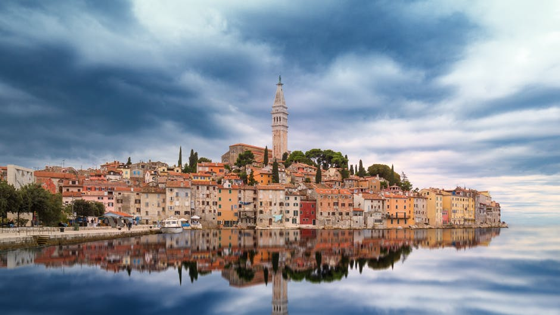

Glaciers Are Shrinking
Ice Sheets are melting all around the world, causing them to shrink. For Example, Greenland lost 250 cubic kilometers of ice per year between 2002 and 2005. That’s a total of 1,250 cubic kilometers in just five years! That’s as much as what’s contained in all of the world’s rivers!
Glaciers Are Retreating
According to a study done by the National Aeronautics and Space Administration (NASA), glaciers in the Alps, Himalayas, Andes, Rockies, Alaska, Africa, and many other regions of the world are melting fast.
Arctic Ice is Growing Smaller
Arctic Ice has been shrinking over the past several decades,. Both it’s extent and thicknss has decliend rapidly over the last several decades

Snow Cover is Decreasing
Snow cover in the Northern Hemisphere has been decreasing over the past several decades, and melting earlier in the year.

Rising Sea Level
The rate at which the global sea level has been rising over the last two decades is over twice as fast as as the rate of the alst century.
Ocean Acidification
The acidity of surface ocean waters has increased by about 30 percent since the beginning of the industrial revolution. The amount of CO2 absorbed by the upper layer of the oceans is increasing by about 2 million tons per year.

Extreme Weather
The Frequncy and intensitiy of regualr weather events as well as extreme weather events has been increased, and extreme weather events have been getting more extreme. The number of record high temperatures in the US has been increasing, while the number of record low temperatures has been decreasing.